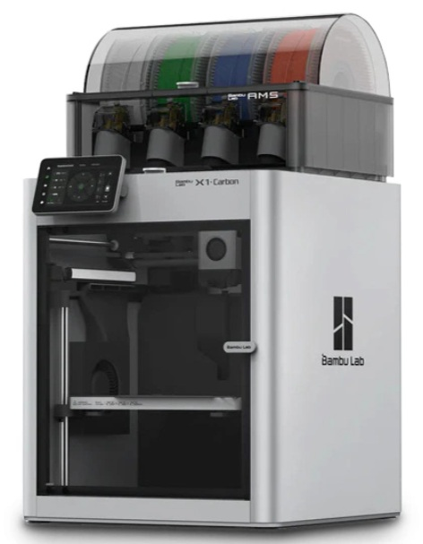

Druk 3D
Nowoczesna technologia tworzenia obiektów z modeli cyfrowych

Czym jest druk 3D?
Druk 3D (inaczej wytwarzanie addytywne) to technologia tworzenia fizycznych obiektów poprzez nakładanie materiału warstwa po warstwie na podstawie modelu cyfrowego (np. z pliku CAD). W przeciwieństwie do tradycyjnego „odejmowania” materiału (np. frezowania), tutaj budujesz element od zera. Jest wykorzystywany w przemyśle, medycynie oraz hobby.
Druk 3D w praktyce
Dlaczego warto?
- Tworzenie własnych projektów
- Produkcja niskoseryjna
- Prototypowanie produktu
- Oszczędność pieniędzy
- Nauka nowych technologii